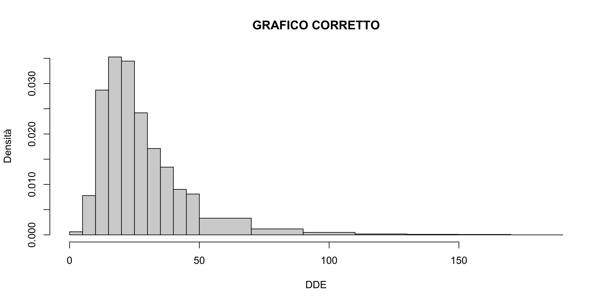
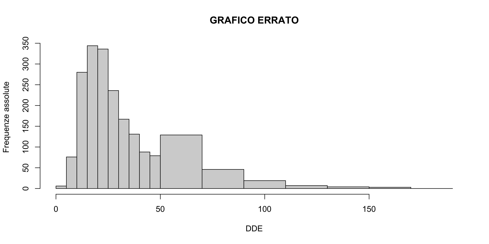
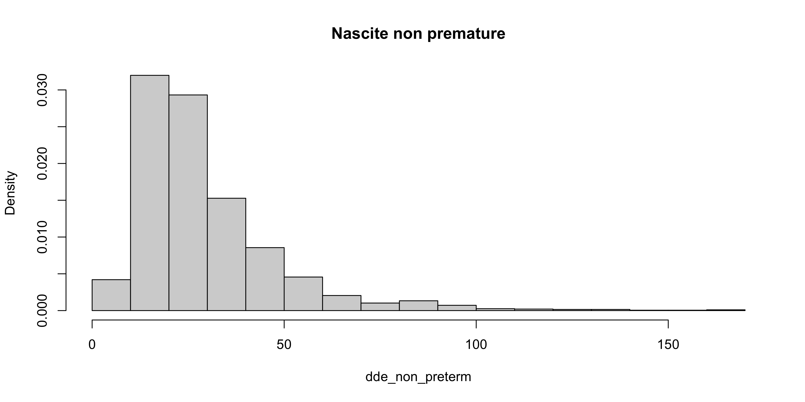
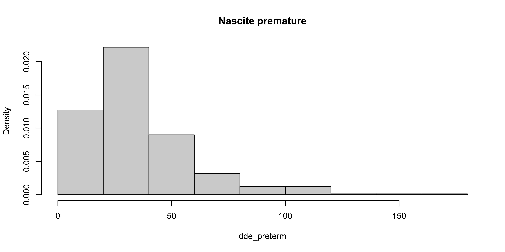

R per l’analisi statistica multivariata
Unità D: analisi descrittiva dei dati dde
Università degli Studi di Milano-Bicocca
Argomenti affrontati
- Frequenze assolute, relative
- La funzione di ripartizione
- Rappresentazioni grafiche (boxplot, istogrammi)
- Indici di posizione (media, mediana, quantili)
Nota
Gli esercizi R associati sono disponibili a questo link
Il problema epidemiologico
Il DDT è estremamente efficace contro le zanzare da malaria ed è pertanto largamente usato in zone in cui la malaria è endemica.
Al tempo stesso, il DDT potrebbe costituire un rischio per la salute, specialmente nel caso di donne in gravidanza.
Per un campione di n = 2312 donne in gravidanza, viene misurato il DDE, ovvero una sostanza connessa al DDT, presente nel siero materno durante il terzo trimestre della gravidanza.
La variabile GAD (Gestational Age at Delivery) misura invece a quale giorno della gravidanza è avvenuto il parto.
Domanda di ricerca
La quantità di DDE è maggiore tra donne che hanno partorito prematuramente?
Importazione dei dati dde
Per poter procedere con i prossimi comandi, è necessario scaricare il file dde.csv e salvarlo nel proprio computer. Link al file
In alternativa, possiamo semplice ottenerli usando il link:
'data.frame': 2312 obs. of 2 variables:
$ DDE: num 24.6 15.6 54.8 15 33.5 ...
$ GAD: int 292 289 252 285 281 283 277 284 293 277 ...Si noti la presenza di una nuova tipologia di variabile, ovvero integer, ovvero numeri interi.
Operazioni preliminari
Un totale di 361 donne hanno partorito prematuramente, ovvero prima della conclusione della 37a settimana.
Per verificare questo, dividiamo la variabile DDE in due gruppi.
dde_preterm <- dde$DDE[dde$GAD < 37 * 7] # Gruppo parto prematuro
dde_non_preterm <- dde$DDE[dde$GAD >= 37 * 7] # Gruppo parto non prematuro
length(dde_preterm) # Numerosità campionaria gruppo 1[1] 361[1] 1951Il primo gruppo (variabile dde_preterm) fa riferimento ai parti prematuri e comprende 361 osservazioni.
Il secondo gruppo (variabile dde_non_preterm) considera i parti non prematuri e comprende le restanti 1951 osservazioni.
Suddivisione in intervalli
Per sintetizzare i dati tramite frequenze, possiamo suddividere l’intervallo che contiene tutti i valori osservati (ovvero (0,180]) in un certo numero di sotto-intervalli.
In primo luogo, definiamo i 10 sotto-intervalli di lunghezza 18, chiusi a destra tramite il comando cut:
breaks <- 18 * (0:10) # Definizione degli intervalli. Usiamo 10 intervalli di lunghezza 18.
dde_preterm_class <- cut(dde_preterm, breaks = breaks)
dde_non_preterm_class <- cut(dde_non_preterm, breaks = breaks)
head(dde_preterm_class)[1] (54,72] (18,36] (18,36] (0,18] (0,18] (18,36]
10 Levels: (0,18] (18,36] (36,54] (54,72] (72,90] (90,108] ... (162,180]In questo modo, abbiamo trasformato una variabile numeric in una variabile factor.
Frequenze assolute
Le frequenze assolute n_1,\dots, n_k si ottengono quindi tramite il comando table, il quale ha senso di essere applicato su variabili di tipo factor.
La funzione table conteggia quante volte una determinata modalità compare nel vettore.
Eseguiamo questa operazione per entrambi i gruppi di dati:
dde_preterm_class
(0,18] (18,36] (36,54] (54,72] (72,90] (90,108] (108,126] (126,144]
68 164 65 34 14 10 3 1
(144,162] (162,180]
1 1 dde_non_preterm_class
(0,18] (18,36] (36,54] (54,72] (72,90] (90,108] (108,126] (126,144]
573 906 308 91 40 19 6 5
(144,162] (162,180]
2 1 Frequenze relative
Una volta ottenute le frequenze assolute, è possibile calcolare le frequenze relative.
Sebbene sia possibile usare comando prop.table (lo re-incontreremo in seguito), qui seguiamo una via più diretta.
Si ricordi infatti che n = n_1 + \cdots + n_k, pertanto possiamo ottenere le frequenze relative f_j = n_j / n come segue:
dde_preterm_class
(0,18] (18,36] (36,54] (54,72] (72,90] (90,108] (108,126] (126,144]
0.188 0.454 0.180 0.094 0.039 0.028 0.008 0.003
(144,162] (162,180]
0.003 0.003 freq_rel_non_preterm <- freq_abs_non_preterm / sum(freq_abs_non_preterm)
round(freq_rel_non_preterm, digits = 3)dde_non_preterm_class
(0,18] (18,36] (36,54] (54,72] (72,90] (90,108] (108,126] (126,144]
0.294 0.464 0.158 0.047 0.021 0.010 0.003 0.003
(144,162] (162,180]
0.001 0.001 Organizzazione dei risultati
Raccogliamo quindi i risultati appena ottenuti all’interno di una matrice, per poterli visualizzare meglio.
tab_summary <- cbind(
freq_abs_preterm, freq_abs_non_preterm,
freq_rel_preterm, freq_rel_non_preterm
)
colnames(tab_summary) <- c(
"n_j prematura",
"n_j non prematura",
"f_j prematura",
"f_j non prematura"
)
round(tab_summary, 3) # Visualizzazione dei risultati n_j prematura n_j non prematura f_j prematura f_j non prematura
(0,18] 68 573 0.188 0.294
(18,36] 164 906 0.454 0.464
(36,54] 65 308 0.180 0.158
(54,72] 34 91 0.094 0.047
(72,90] 14 40 0.039 0.021
(90,108] 10 19 0.028 0.010
(108,126] 3 6 0.008 0.003
(126,144] 1 5 0.003 0.003
(144,162] 1 2 0.003 0.001
(162,180] 1 1 0.003 0.001Gli istogrammi I
L’istogramma consente di rappresentare graficamente una distribuzione di frequenza. Per rinfrescare la memoria, si ricordi che nella sua versione più semplice si pone:
\begin{aligned} (\text{base rettangoli}) &= (\text{lunghezza intervalli}) \\ (\text{altezza rettangoli}) &= (\text{frequenze assolute}) \end{aligned}
Questa definizione non è appropriata se gli intervalli hanno dimensioni diverse.
In tal caso, è le altezze dei rettangoli devono essere proporzionali alla densità delle osservazioni nelle singole classi.
Ricapitolando, costruiremo gli istogrammi ponendo
\begin{aligned} (\text{base rettangoli}) &= (\text{lunghezza intervalli}) \\ (\text{altezza rettangoli}) &= \lambda \times (\text{densità}) = \lambda \times \frac{(\text{frequenze assolute}) }{(\text{lunghezza intervalli})} \end{aligned}
dove tipicamente si pone \lambda = 1/n.
Gli istogrammi II
Concentriamoci inizialmente solo sul gruppo di nascite non premature, per capire il funzionamento della sintassi di R.
par(mfrow = c(1, 2)) # Divide il grafico in due parti
# Primo grafico, frequenze assolute
hist(dde_non_preterm,
freq = TRUE,
breaks = 10, # Utilizzo 10 sotto-intervalli
# Da qui in poi stiamo solo aggiungendo dettagli estetici
main = "Nascite non premature",
xlab = "DDE",
ylab = "Frequenze assolute"
)
# Secondo grafico, densità
hist(dde_non_preterm,
freq = FALSE, # NON vengono usate le frequenze
breaks = 10, # Utilizzo 10 sotto-intervalli
# Da qui in poi stiamo solo aggiungendo dettagli estetici
main = "Nascite non premature",
xlab = "DDE",
ylab = "Densità"
)Istogramma basato sulle frequenze assolute (sinistra) e sulla densità (destra), solamente per il gruppo di nascite non premature.
Gli istogrammi III
Nel caso di intervalli non equispaziati, è obbligatorio utilizzare l’opzione freq = FALSE, altrimenti il grafico prodotto risulta privo di senso.
# Definizione di intervalli NON equispaziati
breaks <- c(5 * 0:10, 70, 90, 110, 130, 150, 170, 190)
# GRAFICO CORRETTO
hist(dde_non_preterm,
freq = FALSE,
breaks = breaks,
# Da qui in poi stiamo solo aggiungendo dettagli estetici
main = "GRAFICO CORRETTO", xlab = "DDE", ylab = "Densità"
)
# GRAFICO ERRATO
hist(dde_non_preterm,
freq = TRUE, # NON vengono usate le frequenze
breaks = breaks,
# Da qui in poi stiamo solo aggiungendo dettagli estetici
main = "GRAFICO ERRATO", xlab = "DDE", ylab = "Frequenze assolute"
)
Il grafico di sinistra è corretto e fa uso della nozione di densità spiegata in precedenza. Il grafico di destra è errato.
Fortunatamente R ci avvisa tramite un warning che questa procedura è scorretta.
Il numero di intervalli
Un numero troppo basso di intervalli comporta una perdita di informazione.
Viceversa, un numero troppo alto di intervalli comporta una perdita di sintesi.
Si tenga presente che il numero degli intervalli deve dipendere dal numero dei dati.
Sono state proposte varie formule per identificare il “numero ottimale” di intervalli. Vanno però prese come dei suggerimenti e non usate in maniera automatica.
Sturges. Il numero di intervalli, approssimato all’intero più vicino, è (\text{numero di intervalli}) = 1 + \log_2{n}.
Freedman & Diaconis. Il numero di intervalli, approssimato all’intero più vicino, è (\text{numero di intervalli}) = \frac{x_{(n)} - x_{(1)}}{2(\mathcal{Q}_{0.75} - \mathcal{Q}_{0.25})}n^{1/3}.
Il numero di intervalli II
Il numero “ottimale” di intervalli si può ottenere tramite i comandi seguenti:
[1] 12[1] 54Nota
Il comando hist di R, se non viene specificato diversamente tramite l’opzione breaks, seleziona in automatico intervalli equispaziati tramite la regola di Sturges.
Confronto tra le due distribuzioni
Questo grafico conclusivo consente finalmente di confrontare le due distribuzioni.


Eventualmente, è possibile selezionare una regola diversa ponendo breaks = "FD".
La distribuzione di “nascite premature” risulta più spostata a destra.
La funzione di ripartizione empirica I
Una seconda rappresentazione grafica di uso frequente è la cosiddetta funzione di ripartizione empirica F(x).
Siano x_1,\dots,x_n una collezione di dati, allora definiamo F(x) = \frac{1}{n} \sum_{i=1}^n \mathbb{1}(x_i \le x), dove \mathbb{1}(x_i \le x) è la funzione indicatrice e vale 1 se x_i \le x e 0 se x_i > x.
In R, si usa il comando ecdf (empirical cumulative distribution function), ad esempio:
La funzione di ripartizione empirica II
Il comando ecdf restituisce come oggetto una vera e propria funzione. Infatti:
F_non_preterm <- ecdf(dde_non_preterm)
F_non_preterm(c(20, 40, 60)) # Calcola la funzione di ripartizione empirica in 20, 40 e 60[1] 0.3618657 0.8077909 0.9390056[1] 0.8077909Per farne un grafico, è inoltre sufficiente usare il comando plot:
La funzione di ripartizione empirica II
Per poter confrontare le funzioni di ripartizione dei due gruppi, la sintassi è leggermente più elaborata:
L’opzione do.points = FALSE omette i ``pallini’’ nel grafico ed è stato aggiunta per ragioni esclusivamente estetiche.
Indici di posizione: la media
Per quantificare la differenza tra le due distribuzioni, vogliamo trovare le medie aritmetiche delle variabili dde_preterm e dde_non_preterm.
In R ovviamente esiste un comando apposito:
[1] 36.20299[1] 29.14199Come ormai ampiamente rilevato, notiamo che il DDE è presente in quantità maggiore tra le donne che hanno partorito prematuramente.
La media aritmetica poteva essere ottenuta anche a partire dai comandi che abbiamo incontrato nelle unità precedenti:
Indici di posizione: la mediana I
La mediana (Me) di una variabile è il valore centrale della distribuzione, ovvero:
\text{Me} = \begin{cases}x_{\left(\frac{n+1}{2}\right)}, &\qquad \text{ se } n \text{ è dispari}, \\[10pt] \left(x_{(n/2)} + x_{(n/2+1)}\right)/2,&\qquad \text{ se } n \text{ è pari},\end{cases} dove x_{(1)},\dots,x_{(n)} rappresenta il campione ordinato.
In R esiste un comando apposito:
[1] 29.46[1] 24.04Si noti (come mai?) che la funzione di ripartizione empirica, valutata nella mediana, è circa pari a 0.5.
Indici di posizione: la mediana II
La mediana di una variabile numerica si può anche ottenere “manualmente”.
x <- c(10, 20, 25, 3.5, 28, 62)
n <- length(x) # Numerosità campionaria
n # Si noti che n = 6 è pari[1] 6[1] 3.5 10.0 20.0 25.0 28.0 62.0pos_med_1 <- n / 2 # Elemento in posizione n/2
pos_med_2 <- n / 2 + 1 # Elemento in posizione n/2+1
(x_sort[pos_med_1] + x_sort[pos_med_2]) / 2 # Mediana di x[1] 22.5[1] 22.5Esercizio
Si ottenga la mediana “manualmente” nel caso in cui il vettore x ha un numero dispari di elementi.
Indici di posizione: i quantili I
Siano x_1,\dots,x_n un insieme di dati, sia p \in (0,1) e sia F(x) la funzione di ripartizione empirica. Il quantile-p è quindi pari a
\mathcal{Q}_p = \inf\{ x : F(x) \ge p \}.
In R considerando p = (0.1,0.25,0.75,0.9), ovvero il primo decile, il primo quartile, il terzo quartile ed il nono decile, possiamo usare il comando quantile
10% 25% 75% 90%
15.07 19.94 45.30 68.01 10% 25% 75% 90%
12.23 16.73 35.45 50.72 Indici di posizione: i quantili II
Nota
La definizione di quantile che abbiamo fornito coincide con quella descritta nel corso Statistica I, ma non è l’unica possibile (Come mai? Si riveda Statistica I…).
Tale definizione si ottiene con l’opzione type = 1, che tuttavia non è il default. Il valore predefinito è invece type = 7.
Se siete curiosi di conoscere le varie definizioni di quantile, vi ricordo che la documentazione è consultabile tramite il comando: ? quantile.
Nota
Un difetto del quantile type = 1 è che la mediana non sempre coincide con il quantile \mathcal{Q}_{0.5}. Si trovi un esempio in questo accade e si verifichi che invece il problema viene risolto nel caso type = 7.
Indici di posizione: i quantili III
In R esistono in totale ben 9 modi per calcolare i quantili.
Fortunatamente, per numerosità campionarie elevate le differenze tendono ad essere trascurabili.
Elenchiamo qui di seguito alcuni esempi per la variabile dde_preterm:
tab <- rbind(
quantile(dde_preterm, probs = c(0.1, 0.25, 0.5, 0.75, 0.9), type = 1),
quantile(dde_preterm, probs = c(0.1, 0.25, 0.5, 0.75, 0.9), type = 6),
quantile(dde_preterm, probs = c(0.1, 0.25, 0.5, 0.75, 0.9), type = 7),
quantile(dde_preterm, probs = c(0.1, 0.25, 0.5, 0.75, 0.9), type = 9)
)
rownames(tab) <- c(1, 6, 7, 9) # Cambia i nomi alle righe della tabella
tab 10% 25% 50% 75% 90%
1 15.070 19.94 29.46 45.30000 68.010
6 15.054 19.94 29.46 45.49000 68.738
7 15.070 19.94 29.46 45.30000 68.010
9 15.060 19.94 29.46 45.41875 68.465Suggerimento
Cosa fa rbind? Lo abbiamo incontrato nell’unità A.
Il comando summary
Per ottenere rapidamente le principali statistiche descrittive di una distribuzione (minimo, massimo, media, mediana e quartili), si usa spesso il comando summary:
Min. 1st Qu. Median Mean 3rd Qu. Max.
3.17 19.94 29.46 36.20 45.30 178.06 Min. 1st Qu. Median Mean 3rd Qu. Max.
2.50 16.73 24.04 29.14 35.40 162.29 Il comando summary può anche essere usato direttamente su un oggetto di tipo data.frame producendo il seguente output:
I boxplot
Una rappresentazione grafica alternativa agli istogrammi sono i boxplot.
Le statistiche descrittive su cui si basano i boxplot si possono ottenere tramite il comando boxplot.stats, ovvero:
$stats
[1] 3.17 19.94 29.46 45.30 83.25
$n
[1] 361
$conf
[1] 27.35112 31.56888
$out
[1] 94.60 99.42 144.86 105.83 90.73 128.47 91.23 102.50 178.06 88.72
[11] 117.54 108.90 106.70 105.48 109.55 103.88 103.77